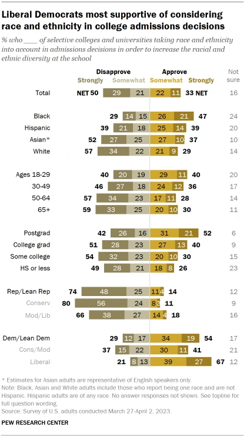
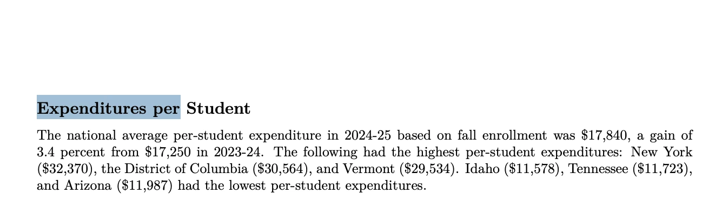

A story about how the smallest, most arbitrary circumstances of your birth quietly decide more than they should, starting with the day itself.
This is roughly how many people walk the earth. Each marble stands for a million of us, and there are more than 8.3 billion. And yet none of us are the same.
We know we inherit some of who we are: a strand of DNA, a build, a predisposition. But we inherit circumstance too: experiences and accidents, big and small, and those turn out to matter more than they look. This is a story about how the small compounds into the big, and how, when you zoom out far enough, a room full of strangers gets surprisingly predictable.
Here is what “surprisingly predictable” looks like. Drop a marble through a field of pegs and every bounce is a coin flip, left or right, pure chance. Drop enough of them and the randomness cancels out. They pile into the same curve, every single time.
Each marble takes an independent coin-flip at every row. No marble is aimed at the middle, yet the middle is where they stack. This is the bell curve, built from nothing but chance.
But not every bounce is a coin flip. Some nudges are dealt to you before you can walk, and they all push the same direction. Start with the one that feels the most arbitrary of all: the day you were born.
01 The birthday
Something as arbitrary as your birth month can decide who reaches the top of a sport. It already has.
There are 365 days in a year, and once a year one of them is yours. Unless you’re into astrology, it probably feels arbitrary. Like your name, it means something, but only to you.
In 1985, two psychologists poked a hole in that. Roger and Paula Barnsley were at a junior hockey game; Paula was reading down the program and noticed how many players were born in January, February and March.1 It wasn’t a fluke. Line the NHL up by birth month and the early months win, in order.
Forty years later, the shape is basically identical. In our own data, players born January to March make up 32% of the NHL; players born October to December make up 19%.2 Real birth seasonality is close to even, nowhere near enough to explain a gap like that. Flip the toggle and watch the even world bend into the real one.
The dashed line is an even 25% per quarter, what you’d expect if the month you were born in didn’t matter.
It is not just hockey, and it is not just the pros’ imagination. But it is also not universal: line up the four big North American leagues side by side and only hockey slides.
There is nothing athletic about being a January baby. The mechanism is the calendar. Most youth hockey sorts kids by a hard age cutoff, and in Canada that cutoff is January 1. A kid born on January 1 can be almost a full year older than a teammate born the previous December 31, and at eight years old, a year is enormous. The older kids look better, get picked for the stronger teams, get better coaching and more ice time. The small head start compounds. Researchers borrowed a name for it from the Gospel of Matthew: to those who have, more is given.3
Roster spots are fixed, so removing the birthday effect wouldn’t add players to the NHL. It would swap them.
You can’t help wondering how many kids would have made it if they’d been born a few months earlier. Line the league up against an even birth distribution and about one in ten players sits in the late-born deficit: the talents screened out young for showing up small. Scaled to a present-day roster of roughly 700, that is on the order of 70 different people wearing NHL sweaters, not more of them.2
Now look back at the three leagues that stayed flat. In the NFL, NBA and MLB, birth month barely moves the needle, and that fits: American football, basketball and baseball group kids by grade, not by birth year. A late birthday there can mean repeating a grade and playing down a level, and by college the rosters run well into players’ mid-20s. The age gap washes out.
To be sure it’s the cutoff and not something about ice, check two more sports that also run on a January calendar. Soccer players and competitive swimmers born early in the year are over-represented in exactly the same way, and when US Soccer moved to a January 1 birth-year cutoff in 2016, the tilt followed the new rule.4
So a birthday, something no one picks and no one earns, can help decide who reaches the top of a sport. If a difference that small can move who becomes a pro athlete, what else does it quietly move? Grades, test scores, careers, who ends up rich.
02 The classroom
The same head start shows up in school. This time it fades, and that turns out to be the good news.
If a birthday can bend a hockey roster, the obvious next question is whether it bends the thing that decides far more lives: school. It does, at least at the start. A Florida study followed more than 100,000 kids through the system.5 In most of the US the cutoff runs the opposite way from hockey, so a September baby is the oldest in the class, and in kindergarten those September kids showed up about 10 percentile points more “ready” than their August classmates. That gap was more than five times larger than any other month-to-month comparison.
Then it melts. By third grade the September edge was down to about 8 points, by eighth grade about 4.5, and by age 18 it was 1.3.5 Being a year older at five is a big deal. Being a year older at eighteen is almost nothing. Step through it:
The oldest kids in a grade start about 10 points ahead. Click forward and watch the advantage shrink toward nothing by graduation.
It leaves a faint mark on the finish line: September-born students were about 1 to 1.5 percentage points more likely to earn a college degree, and a little more likely to land at a selective one.5 Real, but small. And by the time these kids are adults earning a paycheck, the gap is gone. Several of the largest studies land in the same place: by your late 20s or early 30s, the month you were born in stops predicting your income.6
That is the reverse of the hockey story. There, a tiny early edge compounded into a career. Here, a real early edge in something we care about a lot, school readiness, quietly evaporates. So how many advantages that feel decisive stop mattering once you follow them far enough?
03 Where you’re born
Move from when you were born to where. Sports draw a surprisingly sharp map of the country.
So the birthday is mostly a false alarm. Where you’re born is not. The US is a stack of different regions, cultures and climates, and sports give you a clean, countable window into them.
“It just means more” is the slogan of the Southeastern Conference, and it turns out to be almost literally true. Per million residents, the South produces roughly double the NFL players of the other three regions, about 60 to the low 30s. Louisiana by itself makes NFL players at more than three times the national rate. The Northeast, for its part, is not big on contact.
The pattern is cultural, not genetic. The South also produces the most NBA players, led by Mississippi, with hoops-history states Kentucky and Indiana in the top five. The state where Little League was born, Pennsylvania, makes more baseball players than anywhere else. And all of it flips for hockey, where a single state, Minnesota, produces about twelve times the national rate.
Where the lakes freeze, kids skate. Where Little League started, kids play baseball. Down south, they play football. The best athletes pursue whatever sport their place cares about most. That much is comfortable. What is less comfortable is what happens when you take one more step in, and go back in time.
04 The price of admission
Rewind three decades and the same sports quietly change who they let in. The door is tilting toward money.
Go back to the 1990s. About 43% of NFL players came from the poorest quarter of American zip codes. That share has fallen every decade since, down to 33%. Over the same stretch, the share coming from the richest quarter climbed from 10% to 25%. Two and a half times as many NFL players now come from the wealthiest zip codes.8 Drag the slider and watch the richest-quarter share rise across all four leagues.
Dashed line is a proportional 25%. Values are from the hometown-income data, rounded; the NHL sample is small, so read its exact heights loosely.
Football should be the hardest sport to price out. You don’t need a country-club membership to play Pop Warner, and the genetic lottery only hands out so many enormous humans. So the tell is where the shift runs biggest: the positions that reward coaching and reps. Quarterbacks now draw heavily from wealthy hometowns, near 38%, and kickers and punters even more, around 43%.8
It is not that the South got priced out. The South makes more NFL players than ever. They just come from the richer parts of the South now.
Basketball tells a softer version of the same story. You have to be tall, and tall can come from anywhere, but increasingly it comes from wealthier areas: over 44% of NBA players came from the poorest zip codes in the 1990s, down to 33% today, while the richest share more than doubled.
The shift is sharpest in the heavy-skill sports. In baseball, the share of MLB players from the richest American zip codes has climbed to roughly 30%, more than double where it sat in the 1990s.
And then there is the sport on skates. In the 1990s hockey was close to even, with more than 30% of NHL players coming from the poorest zip codes. Today just 10% do, and nearly half come from the wealthiest.
Hockey has become a rich kids’ talent show. Half the league comes from the wealthiest zip codes, and the kids from the poorest ones are disappearing.
None of this says wealthy kids like sports more, or that they are better athletes. Sports were supposed to be the level field, the one place any background could meet. The leagues themselves still don’t care what your parents earn. The path to reaching them increasingly does.
05 Steph, Bronny, and what money shouldn’t buy
Here it gets uncomfortable, and also more interesting. Not every advantage is corruption.
Before writing this off as pure rot, sit with the other reading. If money and training can manufacture talent, that is also proof nurture is stubborn, that it can fight nature and win. Is Steph Curry a villain because his father played in the NBA? Of course not. The man shoots a basketball better than anyone who has lived. Hard work, aimed in the right direction, pays off. A world where only the genetic lottery mattered, where effort was pointless, would be a worse one.
So why does the drift of athletes toward money feel wrong? Look at the player who became the biggest story of the 2024 NBA draft as the 55th overall pick. Less than 3% of players taken that late ever hold a rotation spot, and under 1% become multi-year starters. The 55th pick is usually a warm body. This one was the son of the greatest player alive. Bronny James is good at basketball. He is genuinely good. He is just not Los-Angeles-Lakers good.
We disagree about almost everything. Asked whether race should factor into college admissions, only 14% of Republicans say yes, against 54% of Democrats.9 There is more agreement here than it looks.

Remember Varsity Blues, the families paying millions to buy their kids into elite schools? As the legal scholar Daniel Markovits put it, Americans found a strikingly broad consensus that spots at top colleges shouldn’t be for sale.10 Those kids didn’t earn their seats, and, in the public’s gut, Bronny didn’t earn his roster spot. We argue about a lot. We mostly agree that some things money shouldn’t buy, and that it stings most when what it buys is a young person’s opportunity.
The trouble is that most cases aren’t Bronny. They’re Steph. Did Steph benefit from a rich, gifted father? Clearly. Is that corruption? Not at all. That is the hard part.
06 Money buys the starting line
Leave sports. The same tilt runs through school, and it shows up long before anyone competes.
Consider Oxford, which, unlike the American Ivies, does not weigh legacy or family wealth in admissions. It is supposedly blind to both. And its students still come from money: the average Oxford student comes from a family earning roughly twice the UK average.11 The advantage isn’t at the admissions desk. It was built upstream, years before anyone applied.
Back in the US, SAT scores don’t just rise with family income. They climb at every single step. The gap between a family in poverty and one earning over $200k is 388 points. Even across the middle of the range it is 179.12
You might not care about the SAT. Life isn’t a bubble sheet. Unfortunately the bubble sheet cares about plenty you do care about, income chief among them.
07 The ladder is getting stickier
Zoom out to the whole economy, over time, and the picture gets harder to shrug off.
Has it always been like this? For decades after World War II, the test-score gap between rich and poor kids was roughly flat. In the mid-1970s it began widening, and today it is about 40% bigger than a generation ago.13
Absolute mobility, the plain question of whether you out-earn your parents by 30, has fallen from about 90% for kids born in 1940 to about 50% for kids born in the 1980s.14
Some of that is arithmetic. If your parents lived through the Depression, clearing their bar is easy, and as a country gets richer and steadier, out-earning the last generation naturally gets harder. So the sharper measure, as Scott Winship argues, is relative mobility: whether you can actually climb the ladder, whatever your parents earned.15 In a perfectly fair world, a kid born in the bottom fifth would have about a 20% shot at each rung. That is not what happens.
Dashed line is a fair 20% per rung. A third stay stuck at the bottom; fewer than one in twelve climb to the top.
A kid born in the bottom fifth has about a one-in-three chance of staying there and roughly a 7% shot at the top. A kid born at the top has about a 37% chance of staying on top.15 There is a sticky floor and a sticky ceiling, and both are getting tighter. One thing to flag: this is all wages. Wealth has pulled even further ahead of wages, especially lately, so on a relative basis the gap is worse than income alone shows.
08 Two true things
Meritocracy promised that success is earned. One of its three ingredients is quietly for sale.
Daniel Markovits frames accomplishment as three inputs: effort, talent, and training. The problem is that last one. Training works, and training is the one money buys. Even in sports, the closest thing we have to a pure meritocracy, wealthy kids are increasingly the ones who make it.10
To be fair, hierarchies are not the enemy. Nobody would watch a six-foot-and-under NBA, so the ruthless selection that makes the league worth watching is the point. We want a high bar to become a surgeon, too. Two things can be true at once: inequality can be large, and everyone can still be better off. The pie has grown. It is not zero-sum. By plenty of absolute measures, life has improved: less absolute poverty, less violent crime, less child poverty than most of human history, no drafting millions of men off to war.
The unease is about relative inequality, your standing next to the people around you. That turns out to matter a great deal. As societies grow more unequal they tend to grow less stable, which is bad for everyone. We have blown past the old 80/20 rule on wealth, and no one has a clean answer for how to slow it, or how to get the Matthew effect working for a few more people who didn’t win the parent lottery.
09 What actually moves the needle
If money is the problem, spend more, right? The evidence is stranger than that.
The obvious fix is money: pour it into schools and into elite access. The evidence is more nuanced. Stacy Dale and Alan Krueger studied college choice about as carefully as anyone.16 Picture two students with the same grades and the same SATs. One goes to an Ivy, the other to a strong public school. The Ivy carries real perks: smaller classes, a famous alumni network, and a name that opens doors in any interview. So how different are their incomes at 35? In the first cohort of more than 14,000 students, there was no difference. In a follow-up of about 9,000, again none. The student who went to the elite school wasn’t out-earning the one who didn’t.
The finding is counterintuitive, and it has been challenged. Caroline Hoxby argued the sample was skewed because almost no admitted student picks the less selective school. Except they do: 38% chose the less selective option.16 A few groups did benefit from the fancier school, non-Asian minorities and women, but the general result held. Outside the bumper sticker, college choice barely moved income, which cuts against the intuition that simply making elite colleges cheaper would change much.
So where does money help? Start with the state that looks like it shouldn’t work. New York spends about $32,000 per student, near the top. Mississippi, the cheapest state to live in, spends about $12,324, near the bottom.17

And yet. Adjusted for demographics, Mississippi ranks 1st in fourth-grade reading and 1st in fourth-grade math. For eighth graders, 4th in reading and 1st in math.18 A Black child in Mississippi is about two and a half times as likely to read proficiently in fourth grade as a Black child in California.
Mississippi rebuilt its reading scores without a spending spree. It bought accountability, not tutors.
Mississippi didn’t buy that turnaround with a pile of money. Starting in 2013 it retrained teachers on the “science of reading,” and, just as important, it built in relentless measurement: an office that publicly names the districts with the lowest graduation rates, and that pushes kids who miss class into Saturday school.19 The result is that arguably the poorest state in the country rebuilt its reading and math scores. A couple of neighbors, Alabama and Louisiana, copied the model and are already posting gains.
10 A quick one: birth order
One more circumstance you didn’t choose, and a rare case where it barely matters.
While we’re on things you didn’t pick: birth order. Are first-borns really smarter? A little. Two large Norwegian studies agree on about 2 to 3 IQ points over the second-born, and roughly 2% higher adult earnings.20 Real, measurable, and small enough to be the exception that proves the rule. Most of these accidents of birth matter more than this one.
● The December babies
You can’t delete the Matthew effect, and you might not want to. It is the reason small good choices pay off out of proportion. If you’re sedentary, an hour of walking can buy back several hours of life. Little inputs, nonlinear returns. That’s a good trade.
But the same math that’s exhilarating is what makes comparison so brutal. We get so busy measuring ourselves against everyone else that we forget how much a small nudge can change a life, our own or someone else’s. We shouldn’t resent the people who won the parent lottery. We do have to notice that money is quietly nurturing a new kind of nature, engineering the advantages that used to look innate.
Mississippi and Minnesota point the same direction: targeted human capital, a little funding aimed well, can move outcomes across a whole population. Whether that’s enough against compounding private wealth is the open question. Elite colleges that took 30% of applicants a few decades ago now take under 10%. The University of Chicago admitted 71% in 1995 and under 6% in 2019. The finish line keeps moving out.
Nurture is kicking the shit out of nature. Talent winning the race was never the problem. The problem is that the training behind the talent is increasingly something you can buy. And because of that, we’re probably missing some of the December babies.
Sources
- Barnsley, R. H., Thompson, A. H., & Barnsley, P. E. (1985). Hockey success and birthdate: The relative age effect. CAHPER Journal, 51, 23–28. ↩
- Modern NHL birth dates: the hometown-effect dataset (n = 6,106 players with a known birth date), Nick Gurol, 2026. Birth quarters cut on the January 1 minor-hockey age cutoff; “deficit” is the count of late-born players below an even 25%-per-quarter line, scaled to a ˜700-player active league. ↩
- Musch, J., & Grondin, S. (2001). Unequal competition as an impediment to personal development: A review of the relative age effect in sport. Developmental Review, 21(2), 147–167. On the “Matthew effect” framing, see also Merton, R. K. (1968), Science, 159, 56–63. ↩
- Player birth months compiled from Wikidata (soccer, swimming); cutoff change per US Soccer Federation birth-year registration, effective 2016. Author’s calculations. ↩
- Bedard, K., & Dhuey, E. (2006). The persistence of early childhood maturity: International evidence of long-run age effects. Quarterly Journal of Economics, 121(4), 1437–1472; Figlio, D., Karbownik, K., & Roth, J. (2017), NBER Working Paper 23660 (Florida school records). ↩
- Black, S. E., Devereux, P. J., & Salvanes, K. G. (2008). Too young to leave the nest? The effects of school starting age. NBER Working Paper 13969 (Norway). Consistent with several US and European studies. ↩
- Player production by region and state: the hometown-effect dataset (nflverse, ESPN, Sleeper, MLB/NBA/NHL rosters matched to US Census county and state populations), Nick Gurol, 2026. ↩
- Players by hometown median-household-income quartile, population-weighted with era-matched income vintages (2000 Census for 1990s–2000s cohorts, ACS 2023 for later): the hometown-effect dataset, 2026. NHL cells are small; read exact shares loosely. ↩
- Pew Research Center (2023). Americans’ views on considering race and ethnicity in college admissions. ↩
- Markovits, D. (2019). The Meritocracy Trap. Penguin Press. ↩
- On Oxford’s socioeconomic intake, see the University of Oxford Undergraduate Admissions Statistical Report. Oxford does not publish an average family income; the “twice the UK average” figure is not from Oxford’s own data, which tracks school type, free-school-meal eligibility and area deprivation. ↩
- College Board (2013), SAT scores by family income band, College-Bound Seniors Total Group Profile Report; author’s chart. ↩
- Reardon, S. F. (2011). The widening academic achievement gap between the rich and the poor. In Whither Opportunity? (Duncan & Murnane, eds.). ↩
- Chetty, R., Grusky, D., Hell, M., Hendren, N., Manduca, R., & Narang, J. (2017). The fading American dream: Trends in absolute income mobility since 1940. Science, 356(6336), 398–406. ↩
- Chetty, R., Hendren, N., Kline, P., & Saez, E. (2014). Where is the land of opportunity? Quarterly Journal of Economics, 129(4); relative-mobility framing per Scott Winship. Transition figures are the author’s calculation from the released copula. ↩
- Dale, S. B., & Krueger, A. B. (2002), Quarterly Journal of Economics, 117(4); and (2014), Journal of Human Resources, 49(2). ↩
- Per-pupil spending: US Census Bureau, Annual Survey of School System Finances, FY2024, and NCES. ↩
- Reading and math rankings (demographically adjusted): NAEP 2024, via the Urban Institute’s adjustment and reporting by Nicholas Kristof, The New York Times. Spending-vs-outcome scatter: author’s calculation. ↩
- Kristof, N., The New York Times, on Mississippi’s literacy reforms; Mississippi Department of Education. ↩
- Kristensen, P., & Bjerkedal, T. (2007). Explaining the relation between birth order and intelligence. Science, 316(5832), 1717; Black, S. E., Devereux, P. J., & Salvanes, K. G. (2007), NBER Working Paper 13237. ↩